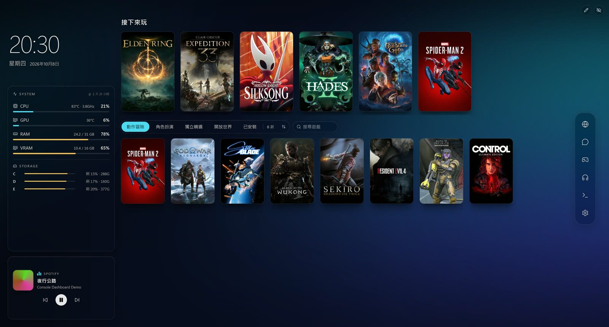
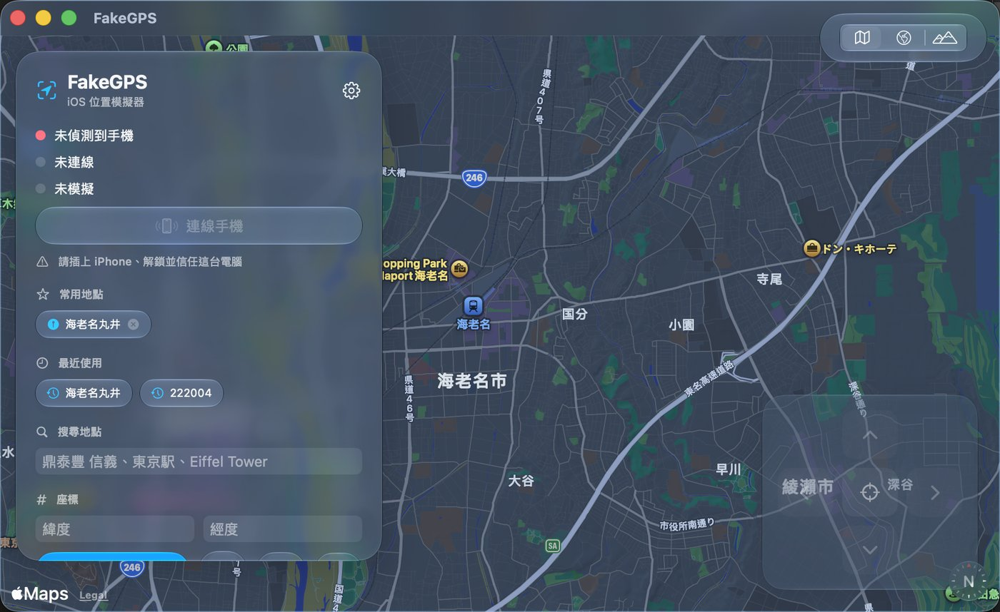
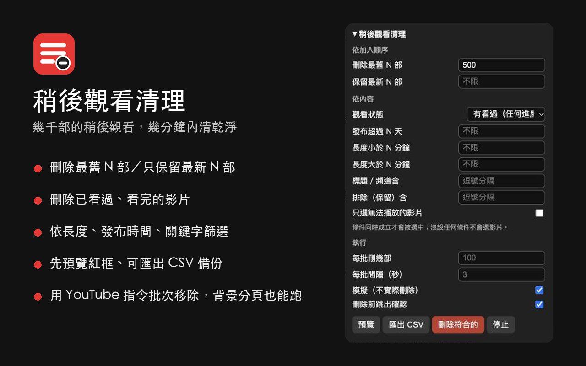
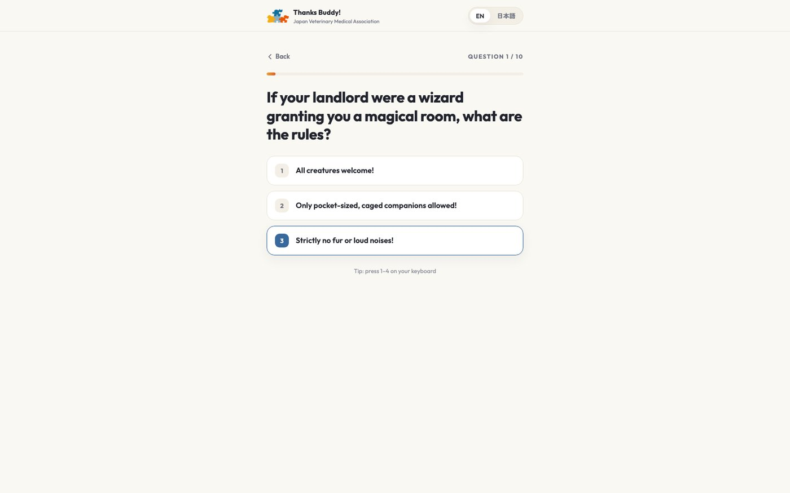
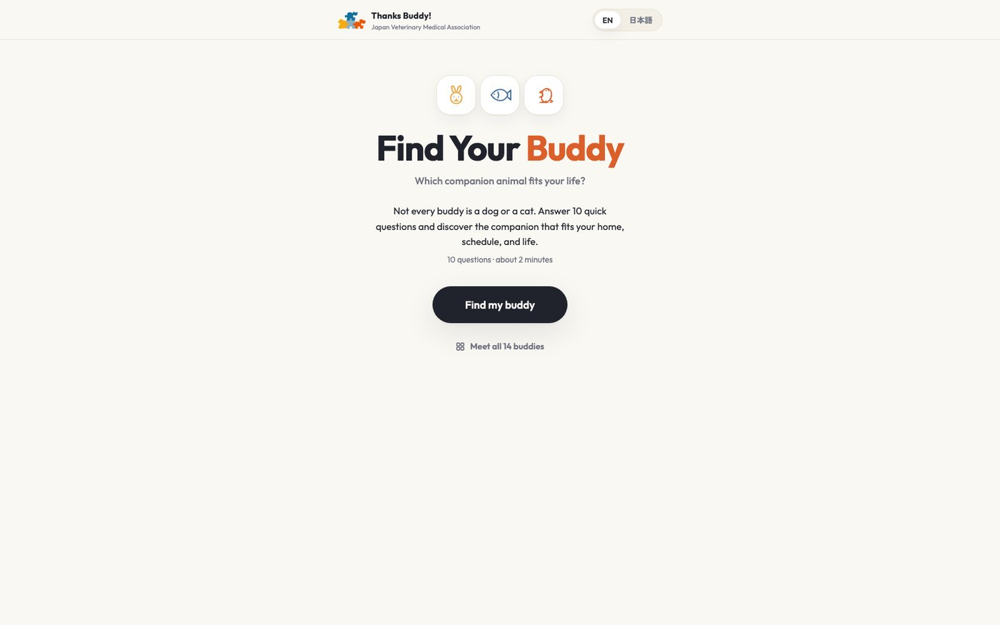
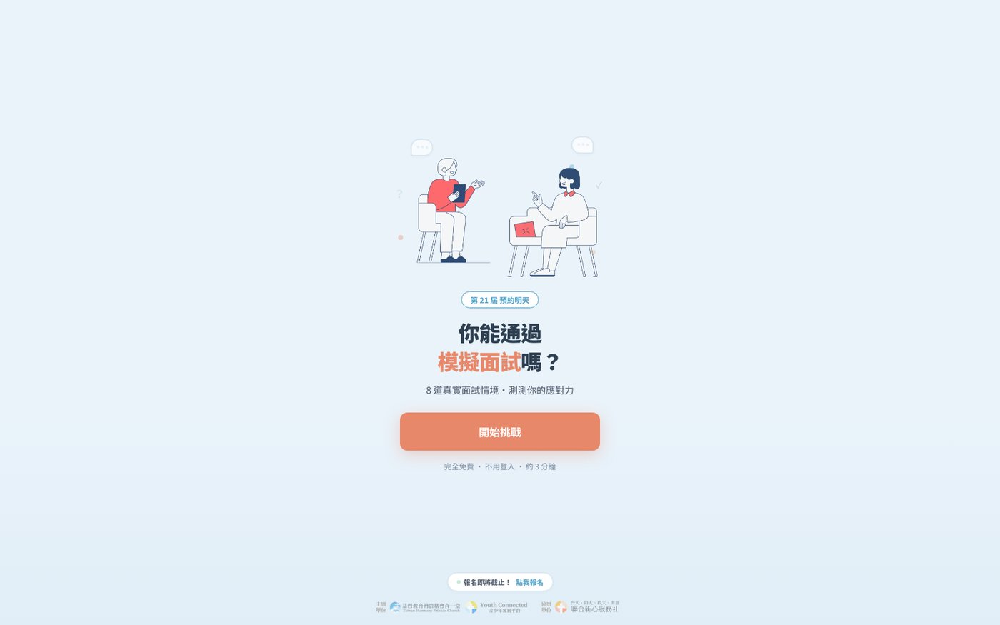

Console Dashboard
A game dashboard that lives on the Windows wallpaper instead of on top of the desktop: other windows work as usual, and going back to the desktop shows your game wall, a clock and system stats. Tauri 2 (Rust) and React; it scans installed games from Steam, Epic, GOG and Xbox and fills in portrait covers.
Most of the trade-offs are about the cost of something that runs all day. When a fullscreen game or a maximised window covers it, it stops drawing and updating entirely; while you're in another app, everything it polls slows to a third of the rate and catches up the moment you come back.
There's also an experimental sandboxed plugin system — before shipping it I wrote a deliberately hostile plugin to attack it, fixed the two holes that turned up, and then all 51 attacks were blocked. The source is private; installers ship through a public release repo.

FakeGPS
Set your iPhone's GPS location from a Mac, for testing apps that depend on location. A native SwiftUI + MapKit app with Apple Maps search, tap-to-set and saved places.
Beyond setting one coordinate, it can move along a real road route at walking, cycling or driving speed: navigation and fitness apps have to be tested against movement, which a fixed point cannot produce.
The trade-offs went into install and everyday friction. Permissions are granted once at install, so launching never asks for a password again, and the install script handles dependencies and permissions so nobody needs Xcode. My own machine has no full Xcode either, so the app is compiled with swiftc from the terminal and the bundle assembled by hand. The source is public under MIT, with install scripts and a cross-platform web build.

Watch Later Cleaner
YouTube only lets you remove Watch Later videos one at a time, which stops being an option once there are a few thousand. This Chrome extension filters by when a video was added, watch status, length, publish date and keywords, then removes the matches in bulk after a preview.
Instead of clicking through menus, it sends each batch through YouTube's own command system and reads the response to confirm it worked, backing off when it doesn't. Removals can't be undone, so it starts in dry-run mode, asks before deleting and can export a CSV first. It doesn't read cookies or send anything anywhere. On a list of about 3,000 videos, removing 800 took about 32 seconds. MIT-licensed.

Find Your Buddy
A 10-question quiz that matches you with one of 14 companion animals. Three languages, and it generates a card you can post to a story.
The part that took longest was not the questions — it was calibrating the match percentage. The first version put almost everyone around 60%, which reads as a shrug. After reweighting, different answer patterns finally lead to different results.


Interview Challenge
A one-page interactive site for a youth event: eight real interview scenarios with feedback at the end. Free, no sign-in, about three minutes — all three written under the button, because that is where sign-ups were being lost.

Stock Watcher
Python
Watches a few product pages and tells me when something is back in stock. The question is not how to fetch the data, it is when to send anything: it fires once, on the transition from out-of-stock to in-stock, with state kept locally, so the same thing is never announced twice.
Three sites need three different approaches; one of them detects scrapers and is handled separately.